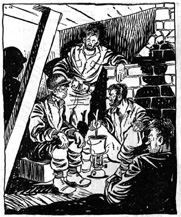

|
 |
The Krishna Bhakti Club Welcomes You:
not collectively - you personally Welcome to the Krishna Bhakti Club at NYU! The Krishna Bhakti Club has been around since 1875 providing weekly cooking classes and study groups to advocate a positive lifestyle and the consumption of non murdered foodstuffs. Currently, we run a vegetarian cooking class every Monday night. There is also a Bhagavad Gita study group that meets at whenever possible. Click on the side links for more information |